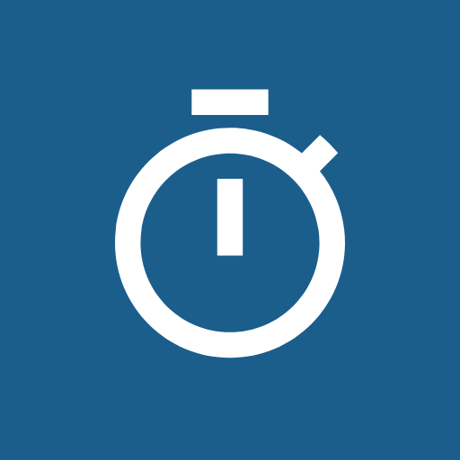
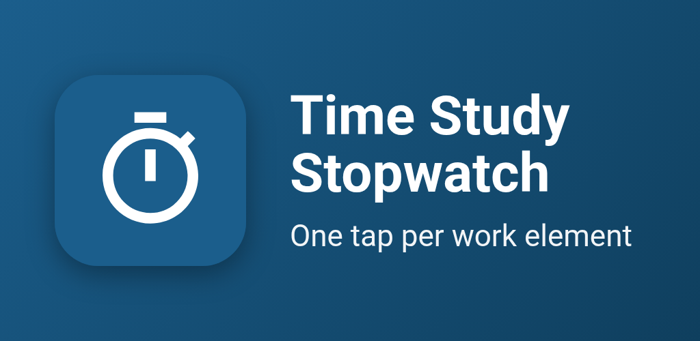
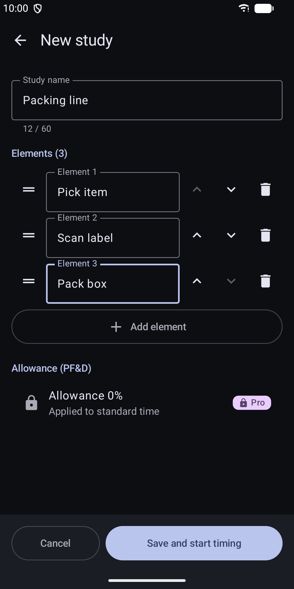
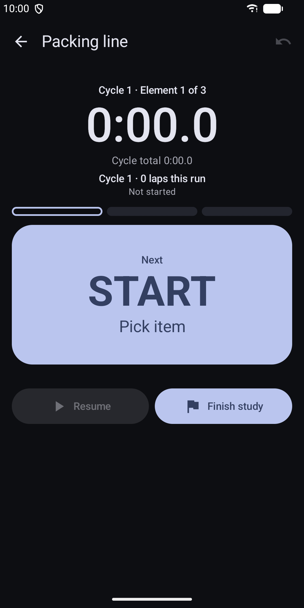
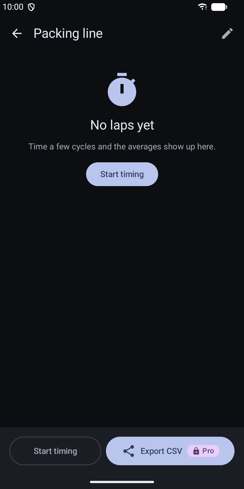
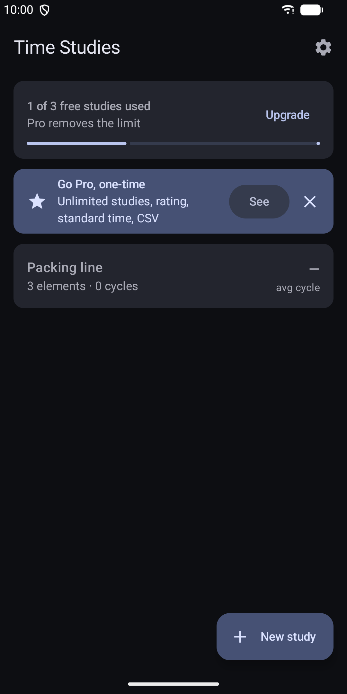
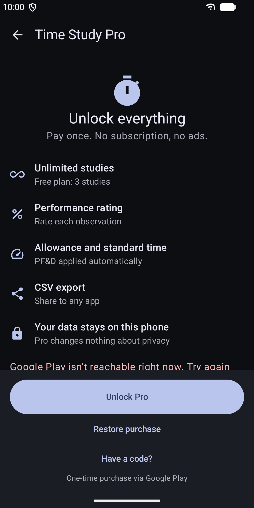
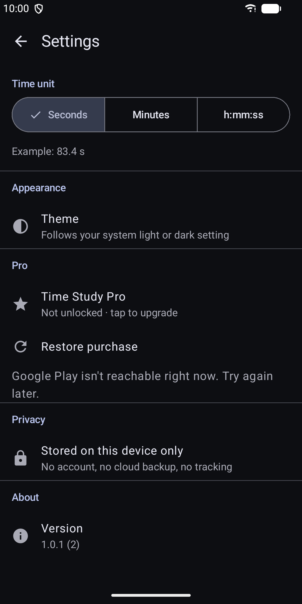

Time Study Stopwatch
Time work elements with one lap tap. Averages, rating and standard time.







About
Time Study Stopwatch turns your phone into a time study board for the shop floor, the warehouse or the classroom. List the work elements of a task once. Then tap one big LAP button as each element ends. The app records every element in every cycle, keeps timing while you switch apps and keeps the screen on while you work. Tapped by mistake? Undo puts the time back. Made for industrial engineers, lean and Six Sigma practitioners, IE students and supervisors. Included in the app: - Up to 3 studies, each with ordered work elements you can add, rename and reorder - A large lap button with haptic feedback and protection against double taps - Multiple cycles per study; a running timer survives app switches and restarts - Average, minimum, maximum and standard deviation per element and per cycle - Edit or delete any observation, with undo - Time unit in seconds, minutes or h:mm:ss - A home-screen widget showing your last study - Light and dark theme that follow your system - TalkBack support and large touch targets - Phone and tablet layouts Time Study Pro is a one-time purchase through Google Play. It unlocks: - Unlimited studies - Performance rating per observation (50 to 200 percent) - Allowance (PF&D) and standard time per cycle - CSV export to any app through the share sheet Your data stays on your device. The app has no account, no analytics and no internet permission. Studies are excluded from cloud backup and device transfer. CSV files are protected against spreadsheet formula injection. Standard time is calculated as normal time multiplied by one plus the allowance. Normal time is the average observed time weighted by your rating.